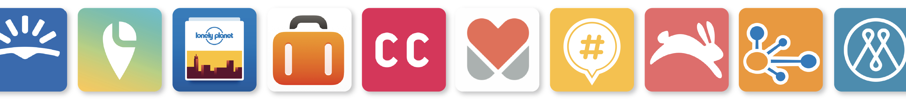

Idea Generation The idea for Hidden came around as I was trying to plan for last summer’s long haul travel. I have always carried out extensive research and planning before booking a trip. My process starts with gathering travel inspiration regarding the destination, then I'll research different activities and eateries I'd like to visit while I'm there, finally putting together a rough itinerary of what I'm going to get up to on my holiday so that I can make the most of my trip. However to gather this information I'm currently using more than 9 apps which is becoming extremely tedious. Therefore I felt a travel inspiration and planning app was the perfect idea for my final year major project.
Competitor Analysis It's important to explore the current landscape and understand what products already exist serving a similar purpose, so that I could identify ways to improve upon what they've done. I used the tool 'S.W.C.D.UX.O' which stands for Strengths, Weaknesses, Content, Design, UX and Opportunities. I evaluated around 20 competiting platforms based on these factors - looking at a range of websites, apps, tv, forums, books and guides. I explored the direct and indirect competitors including LonelyPlanet, TripAdvisor and GetYourGuide, as well as adjacent possible competitors such as Pinterest and Fitbit.
The main problems indentified where that existing platforms only offer one aspect of the travel planning process which forces users to use multiple apps. They are extremely content heavy even though we know users read very little online. And most of them offer a bad user experience.

The competitor analysis also enabled me to start building a list of features I’d like Hidden to include. I carried out a card sorting exercise that grouped these features into what was most important to least important.
User Research Next I identified the target audience. The typical age range would be between 16 and 60 year olds, with a main focus on Millennials as they take the most trips per year and spend the most money on travel. More specifically, Hidden is designed towards pre planners and the organised kind that like to know what there is to do in their chosen destination and where they’re going on each day of their trip.
I conducted a survey, receiving 116 responses in just 8 hours. Majority of respondents were in the 18-24 category and mostly female. The survey helped validate my idea, understand what platforms travellers are currently using and whether they are having the same problems that I had found during the competitor analysis.
I then contacted a few of the survey respondents asking if they’d take part in an interview in order for me to understand more. I conducted 3 interviews with regular travellers from 3 different age groups and different reasons for travel. I asked each of them to talk me through their last travel planning experience, what platforms they used, any delightful experiences they had, as well as pain points.
Then using Miro, I finished the session by asking each of them to prioritise the features I had outlined previously in terms of importance to them. It was great to find out that their responses differed slightly from mine as I was able to learn from that and alter my focus.
User Personas
Conducting this user research, allowed me to easily create 4 user personas. Each from a different age group and with different reasons for travel. Andrew is looking to book a holiday with his friends this summer. Zara is taking this year out for long haul travel. Adina and Toby are exploring the options for their Honeymoon destination. While Lisa is looking to book her yearly family holiday.
User Flows
I had thought a lot about features up to this point, as well as getting the input from the interviewees, so it was time to organise how these features would fit into the different screens. I organised the information architecture which allowed me to really consider the user’s journey. I then created 4 user flows, one for each of my user personas, again each with different reasons for using Hidden.
Design Discovery With market and user research well underway, it was time to build a brand. I struggled with choosing a name from the beginning, simply down to other thinking it. I had Resfeber then Travel Bucketlist, later settling on Hidden as the purpose of this travel app is to find the hidden gems of your next adventure.
I moved onto gathering visual inspiration for typography, colour, imagery, illustration and UI design. Building a simple style tile to gather these initial ideas.
Low Fidelity Wireframes I then sketched potential screen layouts, later turning my favourite layouts into digital blockframes. After exploring Hidden's voice and tone I developed these blockframes further by adding content to the screens creating these low fidelity wireframes.
High Fidelity Prototype I now have a high fidelity prototype of the Hidden app, reaching around 150 screens, full of exciting features and gamification. I have considered the macro, micro-interactions and animations that would occur throughout the app, available to view and interact with.
Numerous versions of the app were created to get to this point, carrying out user testing between each version. I carried out moderated in-person and remote user testing with 15 different users in total. This user insight was incredibly helpful in developing my app in terms of both usability and the visual design, I can see a huge difference between the first and final version of the Hidden app prototype.
Hidden Socials Find out more about Hidden through the landing page at www.hiddentravel.co, where you will also be able to download a travel checklist. You can stay up to date with the project on Hidden's Instagram account to @hiddentravel.co.